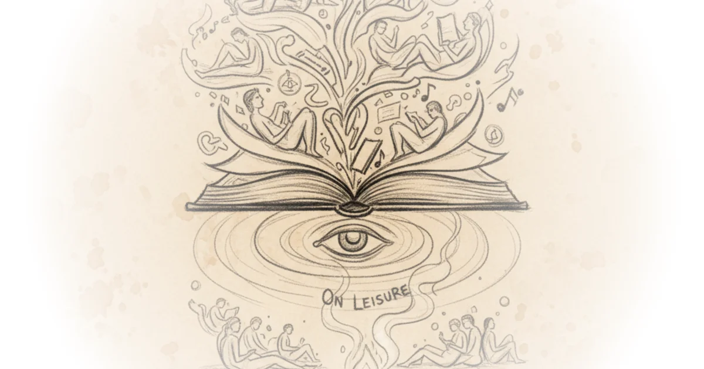

Wes Cecil makes an argument that's been strangely absent from contemporary discourse: we've actually gained time, but we've lost the very concept of leisure—and with it, the capacity for what makes life worth living.
Cecil opens by defining "the Humane Arts" as a series of behaviors unique to individuals rather than institutions or governments. What makes literature, conversation, and culture flourish "is largely due to the way many individuals live their lives." This framing reframes civilization itself as something that emerges from personal choices rather than top-down mandates—a perspective that feels almost radical against our bureaucratic instincts.

The lecture's most counterintuitive claim arrives early: we have more time than people in the 1700s. We live longer—adding fifteen to twenty years—and electric light allows us to stay awake later, giving us an extra hour or two each day. Yet "we don't feel that psychologically right"—we're perpetually short on time. Where does this psychological impression come from? Cecil identifies two forces: we're inundated with things we should do that weren't even available to previous generations, and we've lost the concept of leisure entirely.
We have no concept as far as I can tell or very little of a concept of leisure
This is the piece's strongest move. By tracing the etymology—leisure comes from the French word meaning "license"—Cecil redefines it as time you give yourself permission to do whatever you want. The problem is we're deeply suspicious of this license. We view vacation as "doing nothing," and we've lost what Newton exemplified: a man who considered himself "a man of leisure" and pursued mathematical physics not because his job required it, but because he wished to.
The distinction that matters is between work and leisure. "Work is thing you must do not from you but from the outside world"—the obligations others place on you. "Leisure is whatever it is you do simply and solely because you wish to do it." This is pure humanism: you are "the most important thing in the world" and what you choose to do "should not be repressed or smothered."
This lands because it cuts against everything we've been taught about productivity, career readiness, and purposeful living. But then Cecil pivots to education—where he gets genuinely animated.
Education is supposed to be useless... the goal of education is to be useless
He criticizes art departments for promising "a foundation for a successful career in art" because "career in art is antithetical to the whole notion of leisure." This is provocative: he's essentially arguing that making art into a profession destroys exactly what makes it valuable. The pressure to perform, to monetize, to prepare kids for careers turns music and art into something other than what they were meant to be.
Critics might note that this romantic view of leisure ignores very real constraints—not everyone can simply "choose" to spend their time translating Newton while pregnant, and economic necessity forces most people into work regardless of whether it fulfills them. The lecture doesn't fully address who has access to this kind of leisure or why some people's "choices" look radically different from others.
Bottom Line
Cecil's core argument is compelling: the academic consensus on how we spend our time is clear, and we've mostly spent it on things that weren't even imaginable a century ago. His biggest vulnerability is strategic—headmits that telling people to watch thirty hours of TV "if that's what you wish" might sound like hedonism dressed up as philosophy. But the most interesting tension he raises isn't whether we have time; it's whether we know what we'd do with it if we truly had the choice. That question remains unresolved, and it's precisely where this piece earns its keep.